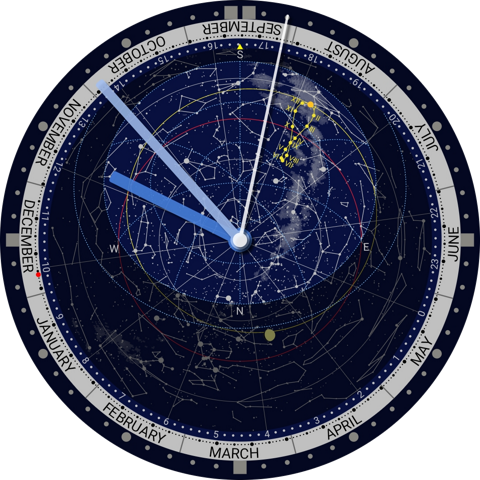

Clock with Planisphere
Android用の星座早見盤付き時計アプリです。星座早見盤は緯度と経度を設定することで、現在地における現在の空を表示します。北天と南天を切り替えることができます。2023年4月にアプリ名を変更しました。
EN | JP
Android用の星座早見盤付き時計アプリです。星座早見盤は緯度と経度を設定することで、現在地における現在の空を表示します。北天と南天を切り替えることができます。2023年4月にアプリ名を変更しました。

Android用の星座早見盤付き時計ウィジェットです。星座早見盤は緯度と経度を設定することで、現在地における現在の空を表示します。北天と南天を切り替えることができます。広告はありませんが、空の表示は現在の時刻に限定されています。2023年4月にアプリ名を変更しました。
メシエ天体や明るい恒星の天球上の位置をリスト表示するアプリです。コンピュータ制御ではない天体望遠鏡でメシエ天体を導入する時に便利です。

四分儀アプリです。カメラ無しモードとカメラモードがあります。カメラモードは太陽の高度測定には利用しないで下さい。カメラが壊れる恐れが有ります。